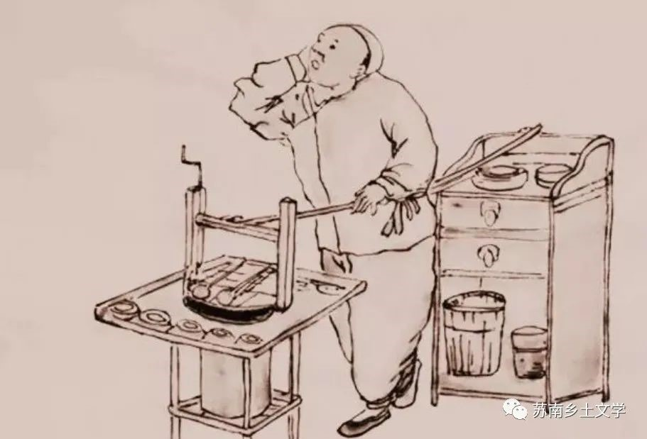
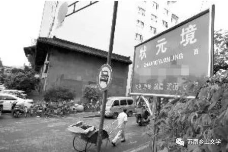

《状元境》《半边营》《追月楼》
《状元境》、《半边营》、《追月楼》是叶兆言“夜泊秦淮”系列中的三篇中篇小说。
《状元境》以民国的南京为时代背景，刻画秦淮河边俗世生活，讲述了小人物张二胡见证了南京城的统治变更，也身陷妻子沈三姐和母亲之间的家庭纠纷以及和马夫之间的市井纠纷；《半边营》围绕华太太儿女的婚姻展开，刻画了一个“曹七巧”式的母亲；《追月楼》描写了南京的一个丁姓旧家族在南京沦陷后产生的动荡与矛盾。
《状元境》
1、社会生活：曾经的繁华地带呈现颓丧脏污之气，不仅是经济的衰退，也是文化的式微。
（1）水与生活是息息相关的，水的状态体现生活的状态。
刷马子、挑水、污水、冲墙根撒尿、河水开始发臭
（2）风流糜烂的生活状况，性关系的混乱（上层、下层）
眼见着桥下花船来去,一个个油头粉面,一阵阵谑浪笑语,满心里不是滋味。
（3）混乱的治安
那炸弹的杀伤力并不大,被抱住的那个伙计受了点伤,却趁势抱过一支枪来,冲着巡警劈里啪啦地乱打。
（4）饮食
雨前茶、盐水鸭、永和园的干丝、兰园的蟹壳黄和包顺兴的小笼包饺
（5）社会风气&社会分层（三教九流）
因此做小生意的被人欺,赶马车的欺负人,一时成了秦淮河一带的风气。
2、经济政治：军阀混战，商业受冲击，商绅被军阀压榨
谁有钱,谁有势,这些军队就拥谁做司令。那些商绅最怕听司令“宁为共和死,不为专制生”的豪言,打起仗来吃亏的是老百姓,尤其是他们这些有钱的老百姓。
3、家庭关系问题（主要体现为婆媳关系）
于是两人全不甘示弱,张口女人的家伙,闭口男人的家伙,下流的脏话不知对骂了多少。
《半边营》
1、生活：船、馄饨担子
租了条中间有小桌子的船。那船新漆成大红色,陪衬着已经有些雕帜的白帆布篷,是一种俗气的热闹。
2、婚恋
（1）包办婚姻依旧是主流
这媳妇也是横挑竖捡选出来的。最初的想法是选一个门当户对的千金。
（2）新旧混杂、土洋结合的婚礼习俗
新娘子身穿大红绣花衫裙,头戴珠冠。索性租一辆汽车,扎上大红的花
《追月楼》
1、老人做寿
丁老先生整七十,打算好好做做寿。俗话说,做九不做十。
2、传宗接代至高无上的重要性，甚至到了畸形的地步（能够容忍儿媳与外人生子）
到医院第二天,生了个又白又胖的儿子。这事不知怎么叫龙潭储家知道了,满月那天,元泰和他妈来丁家领娅母子。
3、新思想对旧式家庭的礼教制度排斥、憎恨
她从一个旧式家庭嫁到另一个旧式家庭,对旧式家庭的一套说不出的厌恶。
感悟
叶兆言的“夜泊秦淮”系列，有一个共同的特点，就是宏大叙事下个体经验的书写。《状元境》、《半边营》和《追月楼》这三篇中篇小说以清末到四十年代的南京为背景，从宏观上看，小说对当地世俗风貌和市井百态有着细致入微的描写，横向铺开，从社会治安到社会关系，一个“乱”字可做总结。而在社会大背景书写下，作者又对生活于其中的典型家庭进行了纵向的深入剖析，旧式家庭似乎面临着不得不做出的改变，但家庭内部仍然挣扎着固守一套传统的秩序，与外部社会秩序之崩溃形成了鲜明的对比。在我看来，叶兆言的这三篇小说除去地点的真实性，乡土的特色被削弱了，但仍不妨碍我们从中对建国前的社会、生活状态窥探一二，对把握乡土文学中的时代政治、经济语境和文化环境又一定的帮助。